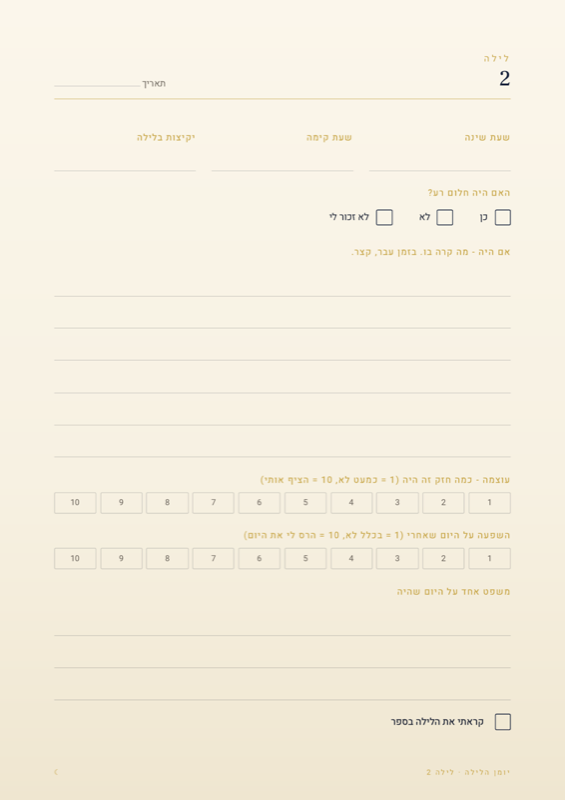
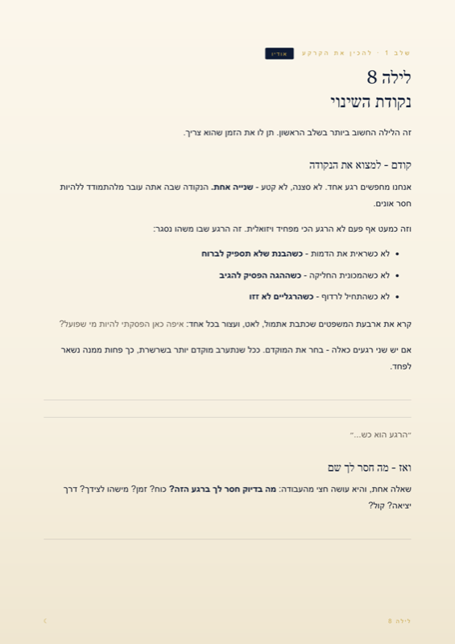
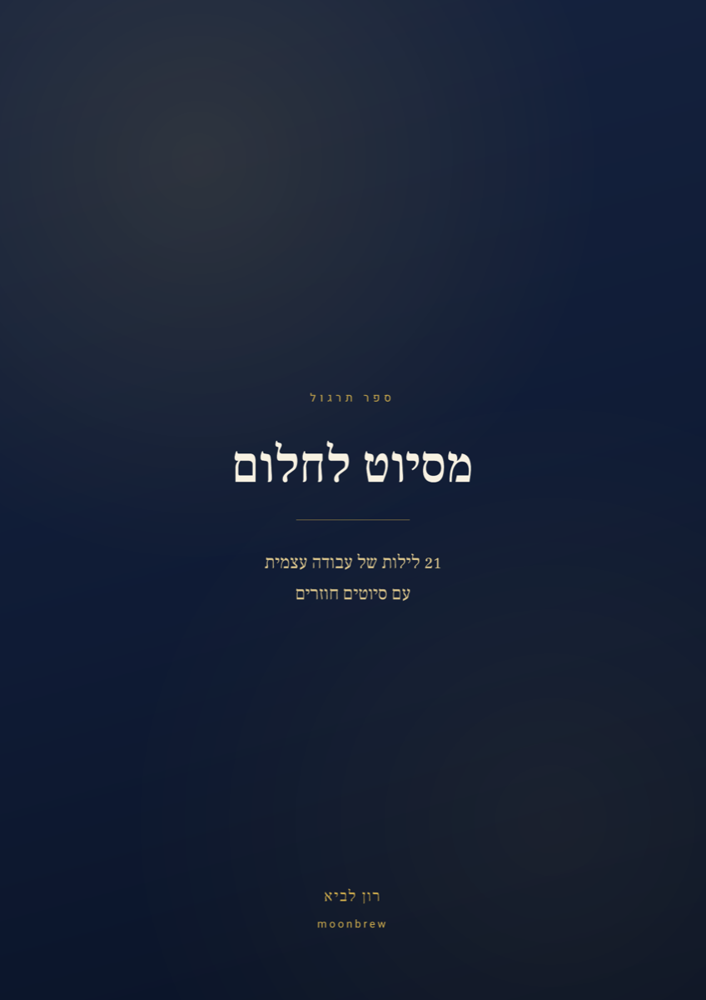

21 לילות.
מסיוט לחלום.
21 יום זה בדיוק הזמן הדרוש כדי לשבור דפוס של סיוט שחוזר.
כל ערב, 10 דקות של תרגול.
שיטה מגובה מחקרית -
לראשונה בעברית, עם הדרכה לעבודה עצמית.
7 ימים להתחרט. החזר מלא. גישה מיידית.
- ◈ספר תרגול לעבודה עצמית
- ▷9 הדרכות קוליות
- ✎יומן מעקב להדפסה
- ∞גישה לכל החיים



הדרך שלי עם סיוטים,
ואיך הצלחתי להתמודד איתם.
קוראים לי רון לביא. התגייסתי לאגוז באוגוסט 2021 והשתחררתי באוגוסט 2024, אחרי שלוש שנים שרובן היו בזמן מלחמה.
כחודשיים אחרי השחרור, באמצע הטיול הגדול, התחילו הסיוטים שחוזרים על עצמם. כמה פעמים בשבוע, במשך חודשים.
והסיוטים שלי לא היו פלשבקים מהלחימה. הם היו חלומות של תסכול, של חוסר תפקוד, של תחושת פספוס. ודברים שלא אמרתי בקול - חייל אמור לציית, ואני הייתי בן 19 עם שאלות. שמרתי אותן בבטן, והן פשוט צפו בלילה.
ובבוקר זה היה נשאר איתי. הייתי מספר על זה לפעמים לחברים, בציניות, כמו בדיחה - ולא הבנתי שיש שם משהו עמוק.
עד שיום אחד סיפרתי לחבר מהצוות, והוא אמר שגם לו זה קורה.
אז התחלתי לתת לסיוטים שלי מקום. התחלתי לכתוב, בלי לחשוב יותר מדי, ולתעד אותם.
ומשם נכנסתי לזה עמוק. שנתיים שבהן קראתי ספרים, שמעתי פודקאסטים, עברתי סדנאות והכשרות, הקמתי קהילה והעליתי תכנים - עד שגיליתי פרוטוקול מבוסס מחקר שמטפלים עובדים איתו היום. הוא פשוט מעולם לא הונגש לעברית בצורה שאפשר לעבור לבד.
מה שבניתי הוא שילוב. כל הידע והניסיון שצברתי, יחד עם הפרוטוקול. הפרוטוקול נותן את המבנה - ומה שעבד עליי, ועל אנשים שליוויתי אחריי, מוסיף את מה שאין בו.
״אבל לא היו לי
קרבות פנים אל פנים.״
גם אם לא הייתה היתקלות, גם אם לא היו קרבות - זה לא מבטל את מה שעברת, ולא את הסיוטים שבאים איתו.
תחושת פספוס. תחושה שלא היית שם בשביל חבר צוות. חוסר תפקוד. חוסר אונים. ספק עצמי.
זה לא תמיד מרגיש כמו ביג דיל - אבל גם לזה מגיע מקום. וגם מזה נולדים סיוטים.
החדר חשוך. הבית שקט. הכל כבוי.
ובפנים רעש. והגוף שלי דולק.
ואני לא יודע איך לחזור לישון.
״השתחררנו לפני שלושה חודשים ועכשיו היה לי איזה שבוע כזה של סיוטים, קצת אותו חלום בתצורה שונה כל פעם.״
״האמת שהרבה יותר טוב.״
״שמתי לב שמאז שדיברנו, בחלומות יש לי יותר ביטחון, יותר שליטה - גם אם קורה משהו מאיים.״
אח שלי אשמח לשתף אותך 🙏
אחרי תקופה מהשחרור ומהמלחמה ואירועים שקרו בה התחילו להיות לי סיוטים,
באופן מובהק ברמה שהייתי מתעורר באמצע הלילה ומתקשה לישון אחרי זה
וזה היה ממש משפיע לי על היום והייתי לא מבסוט מהסיטואציה הזאת.
אחרי שראיתי שאתה מתעסק בעולם החלומות שלחתי לו הודעה בשביל לנסות
ומה שיהיה יהיה העיקר שיעזור - וואלה זה עזר.
עשיתי פעם אחת את השיטה שלך ואחרי כמה ימים זה נעלם לי
ומאז לא חזר לי עד עכשיו ברוך השם.
רציתי לאמר לך תודה ימלך אתה אלוף תמשיך בשלך 🫶
״אני בן אדם שלא מסוגל להקשיב. אני לא מקשיב לכלום שלא מעניין אותי - ואתה הצלחת לסחוף אותי.״
דורון · השתתף בסדנה החיה, 30.7.26
״מרגישה שאתה במיוחד מבין ומרגיש את העומק שיש בחלומות.״
מי שעבדה איתי על חלומות חוזרים
גילי לא עבר את התוכנית - היא עוד לא הייתה קיימת. הוא עבר איתי ליווי אישי על אותם עקרונות שבנו אותה. הציטוטים מועתקים כלשונם ופורסמו באישורו. תוצאות משתנות בין אדם לאדם ואין בהן הבטחה לתוצאה.
סיוט הוא לא תקלה.
הוא מנגנון שנתקע.
סיוט לא מגיע משום מקום - יש טריגר שמפעיל אותו, ויש לו תפקיד.
הוא מנגנון טבעי שנועד לעזור לנו לעבד חוויות שהפעילו אותנו רגשית
בצורה חריגה. אירועים שקשה להכיל.
הבעיה מתחילה כשהעיבוד לא מצליח לקרות. אז הסיוט חוזר. וכשהוא חוזר
מספיק פעמים - הוא כבר לא עיבוד. הוא הרגל. דפוס שהמוח למד.
ומשם זה כבר מעגל.
אתה חושש ללכת לישון, אז אתה נרדם מאוחר וישן פחות. וביום שאחרי, כשאתה שחוק, כל דבר קטן מפעיל אותך יותר - והמטען הזה חוזר איתך ללילה הבא.
ואם הרגל נבנה מחזרות - אפשר לפרק אותו בחזרות. בניית הרגל חדש עוברת דרך תרגול והתמדה. אין דרך אחרת, וזה כל מה שעושים כאן: סוללים מסלול שני, ועוברים בו מספיק פעמים עד שהמוח בוחר בו.
אותו חלום.
בן אדם אחר מולו.
- ״אולי משהו בי דפוק.״
- מפחד ללכת לישון
- קם באמצע הלילה ולא מצליח להירדם
- לא מדבר על זה עם אף אחד
- עייף ושחוק במהלך היום
- חושב שזה יישאר ככה לנצח
- ״זה הרגל שהמוח שלי למד.״
- יש לי טקס קבוע לפני שינה
- קם באמצע הלילה ומצליח לחזור לישון
- מרגיש בנוח לדבר על זה
- רענן יותר במהלך היום
- יודע מה לעשות עם זה
כל מה שצריך כדי להפוך
ידע להרגל.
ספר הדרכה עם ידע ותרגולים
65 עמודים, בגרסת זכר ובגרסת נקבה.
9 הדרכות קוליות
עד 10 דקות כל אחת.
ההדרכה הקולית לשכתוב
כ־10 דקות. הלב של השיטה.
יומן מעקב להדפסה
נותן תמונה על התהליך, מהלילה הראשון ועד ה־21.
כרטיס השכתוב
עמוד אחד להדפיס ולהניח ליד המיטה.
גישה לידע שלי לכל החיים
עם תוכן שמתעדכן.
הבסיס המדעי
של השיטה.
השיטה נקראת Imagery Rehearsal Therapy. קלנר, נידהרט וקרקוב פיתחו אותה בשנות השמונים והתשעים, והמבנה שלה פשוט: מוצאים את הרגע שבו הסיוט נעצר, כותבים לו המשך חדש כשאתה ער, וחוזרים עליו בדמיון עשר דקות ביום.
- ניסוי מבוקר שפורסם ב־JAMA ב־2001 הראה ירידה משמעותית בתדירות ובחומרת הסיוטים - ותוצאות שנשמרו במעקב אחרי חצי שנה.
- הטווח שחוזר במחקרים: ירידה של 50 עד 70 אחוז אצל מי שמתמיד בתרגול.
- ב־2018 האקדמיה האמריקאית לרפואת שינה הכניסה אותה להנחיות הקליניות שלה.
זו תוכנית לעבודה עצמית. היא לא מחליפה אבחון, טיפול פסיכולוגי או טיפול רפואי.
- יש לך סיוט שחוזר, או כמה כאלה, ואתה מתפקד ביום־יום.
- השתחררת מהצבא, ויש בך תחושה שלא נתת לה מספיק מקום.
- או שבכלל לא היית בצבא - עברת משהו אחר, והסיוטים נשארו.
- אתה מוכן לתת לזה עשר דקות בערב, 21 ערבים.
- נמאס לך לשמוע ״זה סתם חלום״.
- אתה בטיפול ורוצה עוד כלי, בתיאום עם המטפל שלך.
- זו לא תוכנית חירום, והיא לא מחליפה טיפול בטראומה טרייה וחמורה.
- היא לא מחליפה עזרה מקצועית במצב קיצוני.
משלמים פעם אחת. מקורות המידע נשארים אצלך תמיד.
- ספר תרגול, 21 לילות, בשתי גרסאות
- 9 הדרכות קוליות · השאר מתווספות
- יומן מעקב + כרטיס השכתוב
- גישה לידע שלי לכל החיים
לפני שמתחילים
ומה אם הסיוט חוזר אצלי כבר שנים?
״דווקא״ כן. השיטה מיועדת בדיוק לאנשים שהסיוטים חוזרים אצלם - זה רק מעיד שזה כבר דפוס, ולא מנגנון עיבוד. במקרים מורכבים עדיף לשלב ליווי מקצועי.
אני אצטרך לספר מה עברתי?
לא. לא חוזרים לאירוע, לא מספרים מה קרה ולא נוברים בעבר. עובדים על החלום שחוזר עכשיו - ומייצרים הרגל חדש.
רוצה לשמוע עוד?
אני משתף ידע על שינה, חלומות וסיוטים - בחינם, בקהילת עקבות לילה ובאינסטגרם.